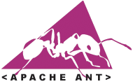
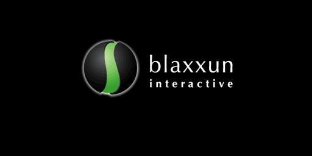

| Product |
Link |
Comments |
| Orion Application Server |
|
Very good J2EE application server, comes with the excellent Hypersonic Database. Free for non-commercial use. |
| Elvin Notification Service (DSTC) |
|
It is specially recommended because of its great performance, security, and multi-language support. Content-based.
Free for non-commercial use. |
| Netscape Navigator (Netscape) |
|
Version 4.51 or higher required. |
| Microsoft Internet Explorer (Microsoft) |
|
Recommended web browser. |
| JAVA 2 Language (Sun) |
|
JAVA 2 Language. Version 1.3.0 is recommended if you want to compile the sources. Powerful and platform-independent language. |
| Apache Ant (Apache) |
 |
A Java-based build tool. It's necessary to be installed for MOVE! compilation. |
| Cosmo Player v2.1 (SGI) |
|
VRML browser. It supports EAI and has become a standard. |
| Blaxxun Contact 5.1 (Blaxxun) |
 |
Recommended VRML browser. It also supports EAI. This version doesn't work under Netscape Navigator. The previous version (5.0) works correctly. |
| HOB rmi (Hob) |
|
RMI support for Microsoft Java. It's necessary in 4.0 or upper versions of Internet Explorer. |